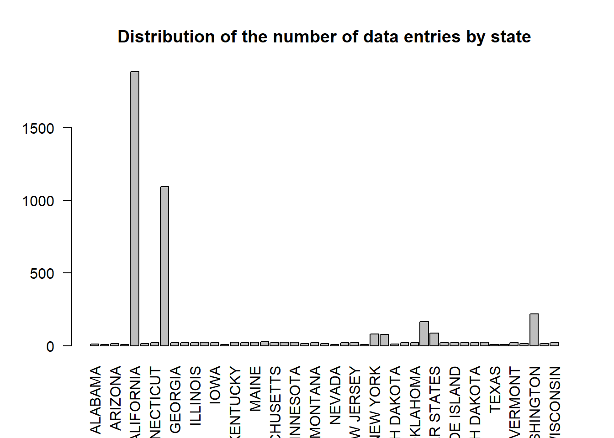
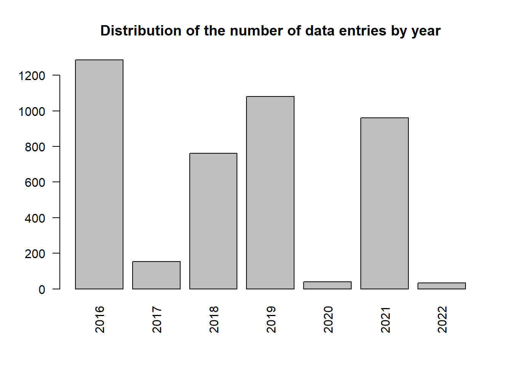
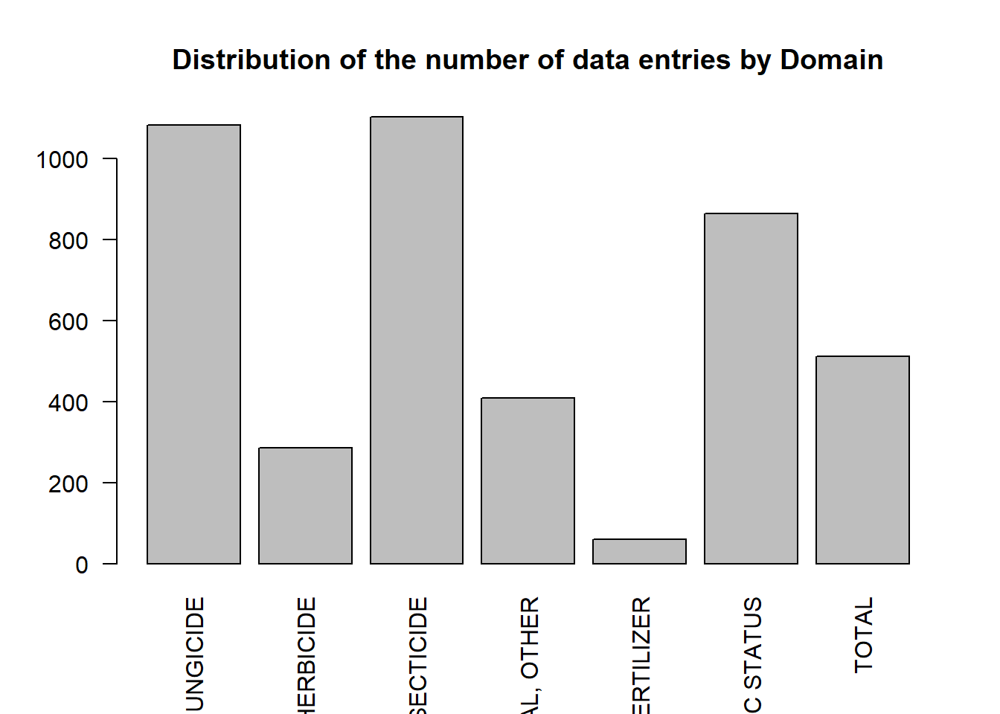
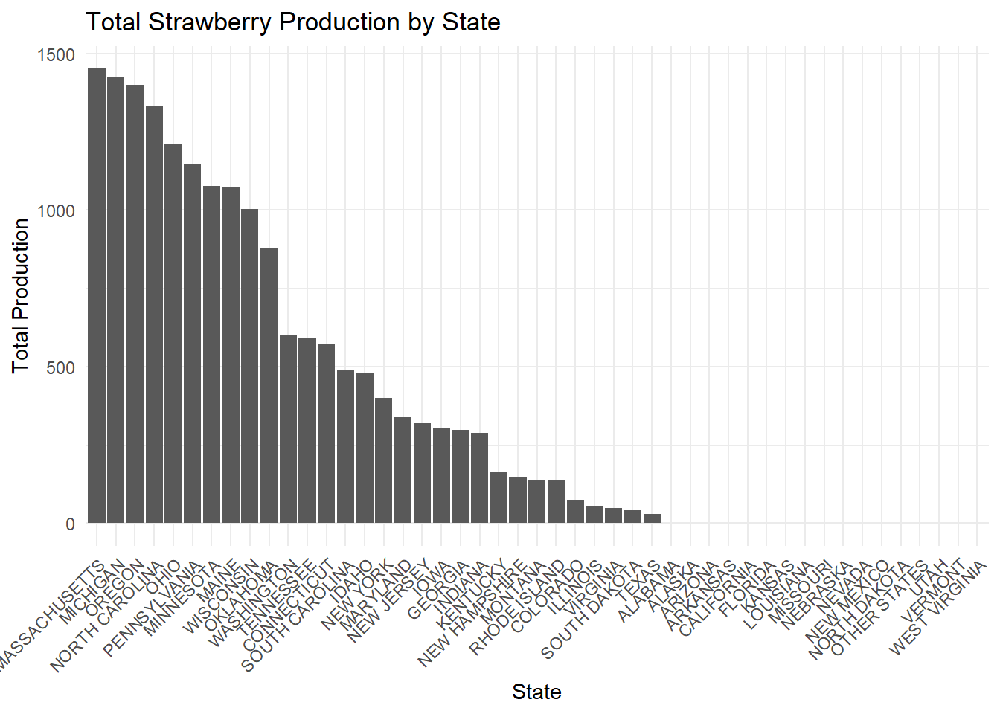
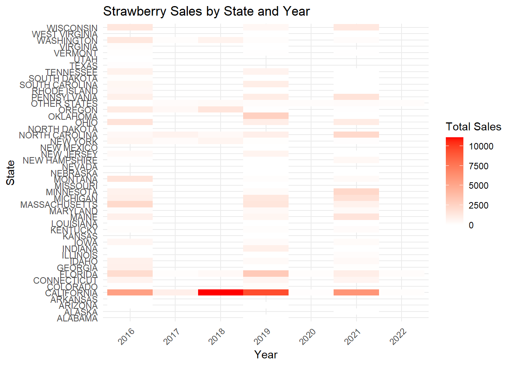
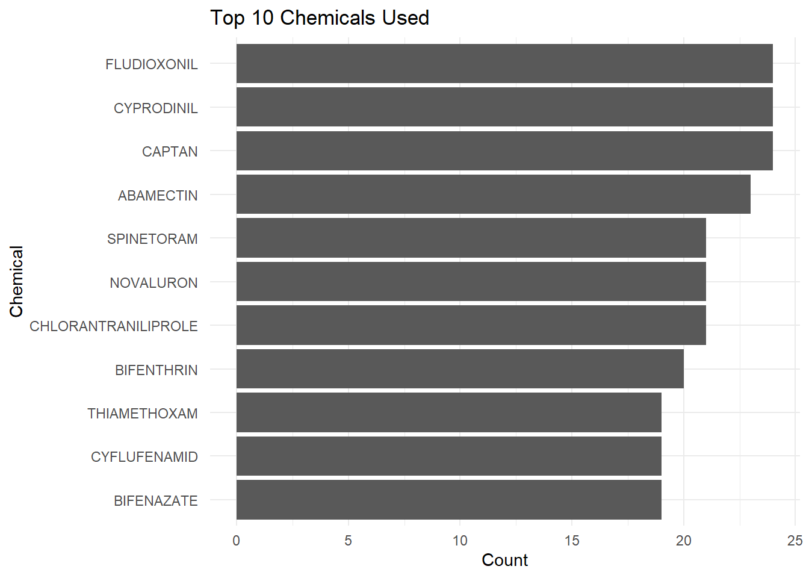
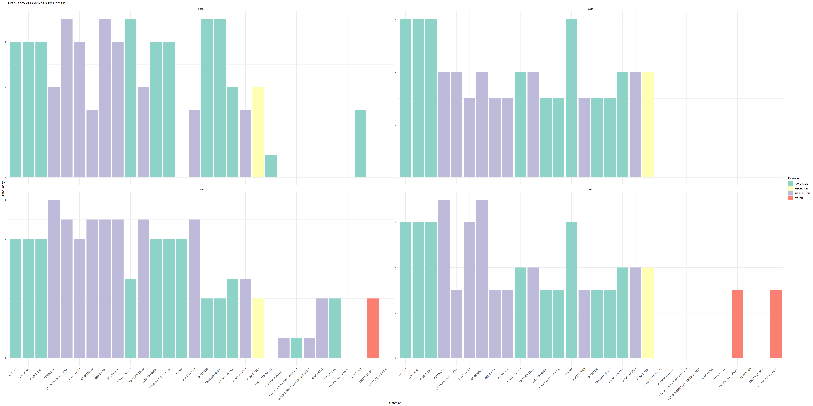
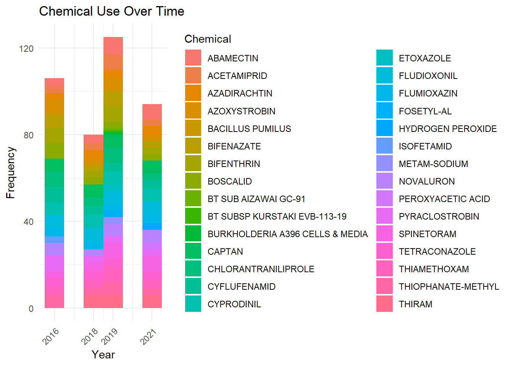
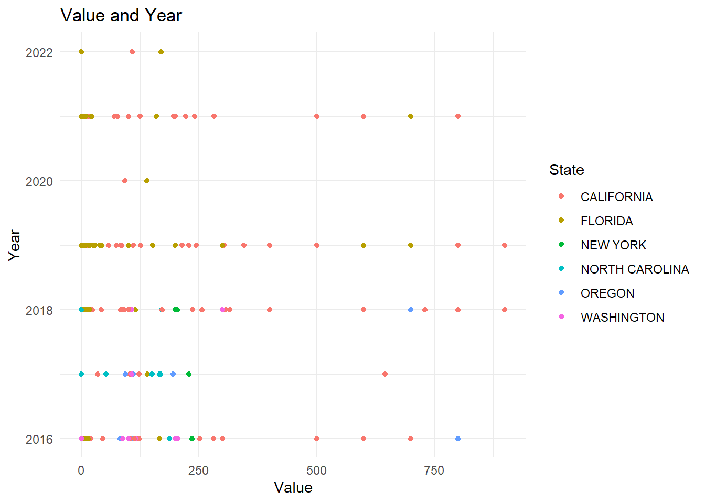

Rows: 4,314
Columns: 21
$ Program <chr> "CENSUS", "CENSUS", "CENSUS", "CENSUS", "CENSUS", "…
$ Year <dbl> 2021, 2021, 2021, 2021, 2021, 2021, 2021, 2021, 202…
$ Period <chr> "YEAR", "YEAR", "YEAR", "YEAR", "YEAR", "YEAR", "YE…
$ `Week Ending` <lgl> NA, NA, NA, NA, NA, NA, NA, NA, NA, NA, NA, NA, NA,…
$ `Geo Level` <chr> "STATE", "STATE", "STATE", "STATE", "STATE", "STATE…
$ State <chr> "ALASKA", "ALASKA", "ALASKA", "ALASKA", "ALASKA", "…
$ `State ANSI` <chr> "02", "02", "02", "02", "02", "02", "02", "06", "06…
$ `Ag District` <lgl> NA, NA, NA, NA, NA, NA, NA, NA, NA, NA, NA, NA, NA,…
$ `Ag District Code` <lgl> NA, NA, NA, NA, NA, NA, NA, NA, NA, NA, NA, NA, NA,…
$ County <lgl> NA, NA, NA, NA, NA, NA, NA, NA, NA, NA, NA, NA, NA,…
$ `County ANSI` <lgl> NA, NA, NA, NA, NA, NA, NA, NA, NA, NA, NA, NA, NA,…
$ `Zip Code` <lgl> NA, NA, NA, NA, NA, NA, NA, NA, NA, NA, NA, NA, NA,…
$ Region <lgl> NA, NA, NA, NA, NA, NA, NA, NA, NA, NA, NA, NA, NA,…
$ watershed_code <chr> "00000000", "00000000", "00000000", "00000000", "00…
$ Watershed <lgl> NA, NA, NA, NA, NA, NA, NA, NA, NA, NA, NA, NA, NA,…
$ Commodity <chr> "STRAWBERRIES", "STRAWBERRIES", "STRAWBERRIES", "ST…
$ `Data Item` <chr> "STRAWBERRIES, ORGANIC - OPERATIONS WITH SALES", "S…
$ Domain <chr> "ORGANIC STATUS", "ORGANIC STATUS", "ORGANIC STATUS…
$ `Domain Category` <chr> "ORGANIC STATUS: (NOP USDA CERTIFIED)", "ORGANIC ST…
$ Value <chr> "2", "(D)", "(D)", "(D)", "2", "(D)", "(D)", "142",…
$ `CV (%)` <chr> "(H)", "(D)", "(D)", "(D)", "(H)", "(D)", "(D)", "1…Stawberries: exploratory data analysis
Data acquisition and assessment
state <- table(strawberry$State)
barplot(state, main="Distribution of the number of data entries by state", las=2)
barplot(table(strawberry$Year), main="Distribution of the number of data entries by year", las=2)
barplot(table(strawberry$Domain), main="Distribution of the number of data entries by Domain", las=2)
Data cleaning and organization
Rows: 4,314
Columns: 10
$ Program <chr> "CENSUS", "CENSUS", "CENSUS", "CENSUS", "CENSUS", "C…
$ Year <dbl> 2021, 2021, 2021, 2021, 2021, 2021, 2021, 2021, 2021…
$ Period <chr> "YEAR", "YEAR", "YEAR", "YEAR", "YEAR", "YEAR", "YEA…
$ State <chr> "ALASKA", "ALASKA", "ALASKA", "ALASKA", "ALASKA", "A…
$ `State ANSI` <chr> "02", "02", "02", "02", "02", "02", "02", "06", "06"…
$ `Data Item` <chr> "STRAWBERRIES, ORGANIC - OPERATIONS WITH SALES", "ST…
$ Domain <chr> "ORGANIC STATUS", "ORGANIC STATUS", "ORGANIC STATUS"…
$ `Domain Category` <chr> "ORGANIC STATUS: (NOP USDA CERTIFIED)", "ORGANIC STA…
$ Value <dbl> 2, NA, NA, NA, 2, NA, NA, 142, NA, NA, NA, 141, NA, …
$ `CV (%)` <chr> "(H)", "(D)", "(D)", "(D)", "(H)", "(D)", "(D)", "19…EDA
The plot displays the total strawberry production by state. States are arranged from highest to lowest production. The taller the bar, the more strawberries that state produces. From the plot, we can quickly identify which states are the major producers and which produce fewer strawberries. This visualization helps stakeholders quickly gauge regional strawberry production patterns.
strawberry <- read.csv("strawberry.csv", stringsAsFactors = FALSE)
# Filter rows where the Data Item column mentions 'PRODUCTION'
production_data <- strawberry[grep('PRODUCTION', strawberry$Data.Item),]
# Convert non-numeric values in the Value column to NA
production_data$Value <- as.numeric(production_data$Value, warn = FALSE)
# Group by State and sum up the values
state_production <- production_data %>%
group_by(State) %>%
summarise(Total_Production = sum(Value, na.rm = TRUE)) %>%
arrange(-Total_Production)
# Plotting the data
ggplot(state_production, aes(x=reorder(State, -Total_Production), y=Total_Production)) +
geom_bar(stat="identity") +
labs(title="Total Strawberry Production by State", x="State", y="Total Production") +
theme_minimal() +
theme(axis.text.x = element_text(angle = 45, hjust = 1))
We can find the Massachusetts has the most Total Strawberry Production and West Virgina has the lowest Total Strawberry Production.
# Filter and process data for sales
sales_data <- strawberry[grep('SALES', strawberry$Data.Item) & grep('\\$', strawberry$Data.Item),]
sales_data$Value <- as.numeric(sales_data$Value, warn = FALSE)
state_sales_by_year <- sales_data %>%
group_by(State, Year) %>%
summarise(Total_Sales = sum(Value, na.rm = TRUE))`summarise()` has grouped output by 'State'. You can override using the
`.groups` argument.# Plotting the data
ggplot(state_sales_by_year, aes(x = as.factor(Year), y = State, fill = Total_Sales)) +
geom_tile() +
scale_fill_gradient(low = "white", high = "red") +
labs(title="Strawberry Sales by State and Year",
x="Year", y="State", fill="Total Sales") +
theme_minimal() +
theme(axis.text.x = element_text(angle = 45, hjust = 1))
The heatmap visualizes strawberry sales across states and years. Each tile in the heatmap corresponds to sales for a particular state in a specific year. The color intensity of each tile indicates the volume of sales, with darker colors representing higher sales. We can find that in 2018 the California has the best Strawberry Sales.
For the survey portion of the data, we process it by splitting the chemical composition into two columns and removing irrelevant variables.
stb_survey <- strwb_survey %>%
filter(str_detect(`Data Item`, "MEASURED IN")) %>%
mutate(`Data Item` = str_extract(`Data Item`, "(?<=MEASURED IN ).*"))
stb_survey <- stb_survey %>%
mutate(
Chemical = if_else(str_detect(`Domain Category`, "\\(.*=.*\\)"),
str_extract(`Domain Category`, "(?<=\\().*?(?=\\=)"),
NA_character_),
Chemical_Code = if_else(str_detect(`Domain Category`, "\\(.*=.*\\)"),
str_extract(`Domain Category`, "(?<=\\=).*?(?=\\))"),
NA_character_)
)
stb_survey <- subset(stb_survey, select = -Program)
stb_survey <- subset(stb_survey, select = -`Domain Category`)Missing Values, Outliers, and Duplicates
stb_survey <- stb_survey[, !sapply(stb_survey, function(col) all(is.na(col)))]
stb_survey <- stb_survey[!is.na(stb_survey$Value), ]
stb_survey <- stb_survey[stb_survey$State != "OTHER STATES", ]strwb_census$`CV (%)`<- as.numeric(strwb_census$`CV (%)`)
strwb_census <- strwb_census %>%
select(-Program,-`Period`,-Fruit,-crop_type,-Domain,-`Domain Category`)stb_survey$Domain <- gsub("CHEMICAL,", "", stb_survey$Domain)
stb_survey$Domain <- trimws(stb_survey$Domain)
#write.csv(stb_survey,"stb_survey.csv",row.names = F)
# Count the occurrences of each chemical
chemical_counts <- stb_survey %>%
filter(!is.na(Chemical)) %>%
group_by(Chemical) %>%
tally(sort = TRUE) %>%
top_n(10) # Display top 10 for brevitySelecting by n# Plotting the data
ggplot(chemical_counts, aes(x = reorder(Chemical, n), y = n)) +
geom_bar(stat="identity") +
coord_flip() + # Flip coordinates for better display
labs(title="Top 10 Chemicals Used", x="Chemical", y="Count") +
theme_minimal()
chemical_freq <- table(stb_survey$Chemical)
# Determine top and bottom chemicals based on frequency
top_chemicals <- names(sort(chemical_freq, decreasing = TRUE)[1:20])
bottom_chemicals <- names(sort(chemical_freq)[1:10])
# Combine top and bottom chemicals
chem_selection <- c(top_chemicals, bottom_chemicals)
# Filter the dataset based on selected chemicals
subset_stb_survey <- subset(stb_survey, Chemical %in% chem_selection)
library(RColorBrewer)
p=ggplot(subset_stb_survey, aes(x = Chemical, fill = Domain)) +
geom_bar(show.legend = TRUE) +
scale_x_discrete(limits = chem_selection) +
scale_fill_brewer(palette = "Set3") +
labs(title = "Frequency of Chemicals by Domain", x = "Chemical", y = "Frequency") +
theme_minimal() +
theme(axis.text.x = element_text(angle = 45, hjust = 1)) +
facet_wrap(~ Year, scales = "free_y")
p
In the 4 years, the initial set of 20 chemicals, such as “MALATHION” and “2,4-D,” primarily corresponds to the categories of “FIELD CROPS” and “FRUIT & TREE NUTS.”
In contrast, the chemicals with the lowest frequencies, like “CHLORPYRIFOS METHYL” and “DIAZINON,” exhibit lower occurrence rates but are linked to various domains. Specific domains, such as “FRUIT & TREE NUTS” and “FIELD CROPS,” are common across multiple chemicals, while others appear less frequently.
# Line chart for Chemical Use Over Time
ggplot(subset_stb_survey, aes(x = Year, fill = Chemical)) +
geom_histogram(binwidth = 1) +
scale_x_continuous(breaks = unique(subset_stb_survey$Year)) +
labs(title = "Chemical Use Over Time", y = "Frequency", x = "Year") +
theme_minimal() +
theme(axis.text.x = element_text(angle = 45, hjust = 1))
This plot provides insights into the temporal trends and patterns of chemical usage in strawberry cultivation. We can find that in 2019, almost every chemical use reachs the most,so we should focus on this year.
ggplot(stb_survey) +
aes(x = Value, y = Year, fill = State, colour = State) +
geom_point(shape = "circle", size = 1.5) +
scale_fill_hue(direction = 1) +
scale_color_hue(direction = 1) +
labs(title = "Value and Year") +
theme_minimal()
Value varies significantly among states, with notable differences in its distribution. Certain states, such as Florida and Washington, D.C., exhibit more extensive Value ranges, signifying greater variability in the data within these regions. While the majority of states tend to have median Values on the lower end, there are a few exceptions with higher median Values.
References
https://quickstats.nass.usda.gov/src/glossary.pdf https://quickstats.nass.usda.gov/param_define